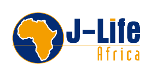

If you quickly passed by the above word cloud, perhaps spend some more time going through it.
Every single word is curated as some of the things I'm really passionate about. Check it out.
Then check out how I try and live out those concepts below in some of the main projects I am involved in.
If you quickly passed by the above word cloud, perhaps spend some more time going through it.
Every single word is curated as some of the things I'm really passionate about. Check it out.
Then check out how I try and live out those concepts below in some of the main projects I am involved in.
My areas of study and work experience include a Bachelor of Science and Honours in Electrical Engineering at
the University of Cape Town (2006 graduation), a higher certificate in Life Coaching (2015) and numerous
short courses in the area of leadership, management, instrumentation and software automation, understanding
human motivation, learning environment design, and business/entrepreneurship management. I graduated with my Masters
in Philosophy in Inclusive Innovation at the Graduate School of Business, UCT in 2020. My dissertation was titled
"Student engagement in low-income, high-stress learning environments" which focused on youth development social enterprises
working on the Cape Flats in Cape Town.
I worked for eight years in the corporate engineering space. With various multinational companies my primary
role was as an Automation Engineer and leading and managing a team of Instrumentation and Software Technicians.
Thereafter, I went through a major career shift focused on driving systemic change in the Education of youth in
under-resourced and high crime communities. I'm pursuing my Masters in Philosophy in Inclusive Innovation with a
specific focus on inclusive education. I've been creating learning hubs in under-resourced and high-crime communities
for the past three years. My main geographical focus has been on the Cape Flats in Cape Town with a specific focus on
Mitchells Plain and Khayelitsha. Since mid-2022 my main focus has moved to Muizenberg as I explore the socioeconmic
divide between and within communities. We run an intentional-living residency in Muizenberg to impact ourselves and
the community.

The residency, called the Duneside Boro Residency (called DB by everyone at the res), is the next
iteration of our work in Mitchells Plain. Once someone graduates from our learning hubs and from
high school, employment is the biggest hurdle for them to overcome. So we set out to create an intentional-living
space where young people between the ages of 18-25 can connect and develop. We living into being
an authentic community as we better understand what that means. They are invited to growth experiences in
their understanding of who they are in this world, who they are made to be, and technological
training to access tech jobs. We also intentionally engage with the surrounding homes, building
relationships, and learning and teaching together. Our intention is that everyone involved,
including ourselves are impacted by the love and presence of God.
Our vision is to have an established digital agency that will be a place for our future graduates
as our learning hubs to work at. We have a passion for creating impact through digital solutions,
and remote-working economic opportunities are increasing so this makes so much sense. We have two areas
of focus. One is creating helping our clients create authentic online communities. We host these sessions and
hold a space for leaders to grow and develop together. The second is helping through teaching 21st century
leadership and management principles. We have a high emphasise on embracing technology through the process.
This is mostly with leaders who are often wary and unconfident around all the technology options out there.

A strategic attempt to foster a supportive community within with Grace Cafe can flourish was to
launch a community group in November 2020. About 10 community members from across the road from
Grace Cafe meet twice a month to offer their gifts to foster a better sense of community. This
has been one of the most exciting community development projects I have ever been apart of.
The community have become friends and we learn together. I see a developing methodology unfold
for the approaches I used in fostering this deeper sense of connection. In this short time, with
lockdown challenges, community members already regard our group an amazing success!

Grace2Learn operates our flagship learning hub in Rocklands, Mitchells Plain.
The name of the learning hub is Grace Cafe. From Jan 2019 till Jan 2021 I have been focused on
developing an independent education model that prioritises the local community individuals.
These include relevant 21 century learning pedagogies, governance system
deployment and systemising multi-generational and multi-cultural engagement.
For the rest of 2021 my focus is in setting systems in place and handing it over to the local church
and its community.

The BK Leadership Residency is in the heart of Stellenbosch university town. It is
geared toward emerging leaders and aspiring leaders to do life together to amplify
their current character abilities and priorities to impact the communities they are
already working in (for me, under-resourced communities in Mitchell's Plain.) My role was developing
healthy rhythms in the household for communal living and assisting one aspiring leader in academic, technical
and emotional development.

During my time employed and freelancing for the School in a Box organisation, I managed all the
tech educational centres across the Western Cape. This entailed ensuring they were using the tablet
technology correctly, that best-practice learning methodologies were being employed and growing the
number of active centres. The School in a Box are one of the few EdTech companies, trying to address
the issue of inclusive hardware educational resources.

My work at the Philippi Village was around connecting with potential collaborators in the broader
Philippi, Crossroads, Nyanga communities. This was no easy task and while there were pockets of inspiration
and cocreation, the project largely did not take off in my time there. My hope is that the deep engagement
sessions that were hosted, formed a platform and small steps forward for future collaboration. Trust was the
key building block I aimed to development with key leaders in the community. We walked together through a process
and methodology called TheoryU with the aim of sensing what our greater intentions were, where there might be overlap
for action and starting with micro actions to test if it works or not. From an experiential and trust building component
this was a successful project. With more time, it might have resulted in deeper more systemic projects for collective impact
in the communities we all worked in. I've learned a lot through this experience and have carried many of the lessons with
me into current projects.
I serve on four boards currently:
The first is on the board of Grace2Learn, an organisation I founded. I also serve as Managing Director.
The second organisation is Techmission, a leadership coaching agency with a affinity to technological solutions.
I am the Managing Director. The third organisation is J-Life Africa. A disciplemaking movement that operates in over 30
countries in Africa. They are fanning the flame for modelling the life of Jesus for developing and growing disciplemaker
leaders. One of my functions is optimising the administration processes in data collection and reporting.
The fourth organisation is East Mountain South Africa. They are a leadership development organisation who focus on residency
experiences for emerging Christian leaders in Cape Town.

The area of work my trajectory is taking me on is in the area of residential community development.
This area of work would focus on individual and collective transformation through incremental and
iterative steps of growth. My purpose in this is to help myself and others realise real justice in
burdensome paradigms. This would include strategies such as a residency for leadership development,
growing a localised learning hub which is material and people resource rich, bringing a living developing
governance system for the community to enable deep engagement, enjoyable decision making and a high sense of
ownership in community project implementation. It is important to note that I do this through an intentional
Christian lens. If you would like chat through any of these or the existing projects I am working on,
please contact me via the channels below.